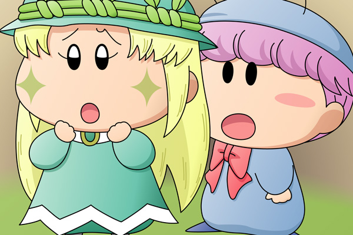

アロマ「ムルモ様・・・」
はっと起き上がるムルモ。ムルモが寝っ転がっていたソファーのすぐ横にアロマが立っていて、ムルモが横を向くとすぐに二人の目が合いました。アロマは何か思い詰めたような、そして何かを言いたげな表情をしていました。
アロマ「ムルモ様、お休みのところごめんなさい」
ムルモ「アロマしゃん！
そんなことないでしゅよ～。
それよりも表情が浮かないでしゅけど、何かあったんでしゅか？」
アロマ「私も今回の事件のことを考えていて・・・
ヤシチさんが何物かに襲われた晩のことを考えていたんだけど」
ムルモ「確かアロマしゃんはボクたちとトランプしてましたでしゅよね」
アロマ「はい・・・。
私はみんなより遅れて部屋を出てリビングに向かったのですが・・・」
ムルモ「ほえ？何か気になることがあるんでしゅか？」
アロマ「ええ。
私が３階から１階へ階段を下りているときに、２階の廊下でヤシチさんの
部屋の方へ歩いている妖精を見かけたのを思い出したの・・・」
ムルモ「それは重要証言でしゅ！
いったい誰だったんでしゅか？」
アロマ「それは・・・」
アロマはムルモに背を向けて続けました。

アロマ「ミルモ様でしたわ」
ムルモ「お、お兄たま！？
それは本当でしゅか？アロマしゃんの
見間違いということはないでしゅか？」
アロマ「水色の服と青のボンボンの帽子が見えたから、いくらドジな
私でも見間違いということはないと思うの」
ムルモ「お兄たまめ・・・ヤシチしゃんの悲鳴が聞こえるまで部屋で
テレビを見ていたのは嘘だったんでしゅね。
後で本当のことを吐かせてやるでしゅ」
ムルモは小声でつぶやきました（アロマにも聞こえています）。
アロマ「でも・・・」
ムルモ「ほえ？」
アロマ「確かにミルモ様なのですが、どこかがミルモ様とは
違っていたような・・・」
ムルモ「それはアロマしゃんの気のせいじゃないでしゅか？」
アロマ「うーん、あまりはっきりとは見ていなかったから
よく覚えていないんだけど・・・」
その時リビングの扉が開き、扉の開く音を聞いた二人は振り返りました。さっきまで外で遊んでいた妖精たちが帰ってきたようです。
ミルモ「はぁ、クモモのおやつはうめぇんだけど、ちょっと量が少ないんだよな」
リルム「まぁミルモ様ったらもうお腹がお空きなのですか？」
サスケ「オイラたちももう腹ぺこなんだぜ」
ハンゾー「夕食の時間まであと３０分もあるのら～」
ヤマネ「ムルモ殿たちはずっとリビングにいたのでございますか？」
パンタ「ボクたんたちと一緒に外で遊べば良かったのに・・・」
ムルモ「ちょっと考え事をしていたんでしゅ」
アロマ「ムルモ様、他に何かなかったか、
夕食の間にももう一度思い出してみますね」
ムルモ「よろしくするでしゅ。
お兄たまへの質問はその後にするでしゅ」
アロマがムルモにそうささやくと、リビングを出て部屋へと続く階段を上っていきました。他の妖精もアロマに続き、一人になったムルモもみんなに続いて、いったん自分の部屋へ戻りました。
ムルモ「クモモしゃんのおやつ、食べ損ねたでしゅ・・・」
ここに来て事件に関してアロマからの重要証言！でも何かに違和感を感じているようで、ここはアロマにがんばって思い出してもらいますか。今回のストーリーはクモモペンションで起きた事件を解く上での重要なヒントとしていますので、皆さんぜひ推理にチャレンジしてくださいね。
それにしても絵の方が回を重ねるたびに手抜きに・・・(^^;。会話シーンを一枚の絵として表現するのが私には難しくて、悩んだあげくに結局構図や背景はシンプルに描くことにしました。皆さんだったらどんな構図の絵にするか聞いてみたいです。
(2008/5/26)